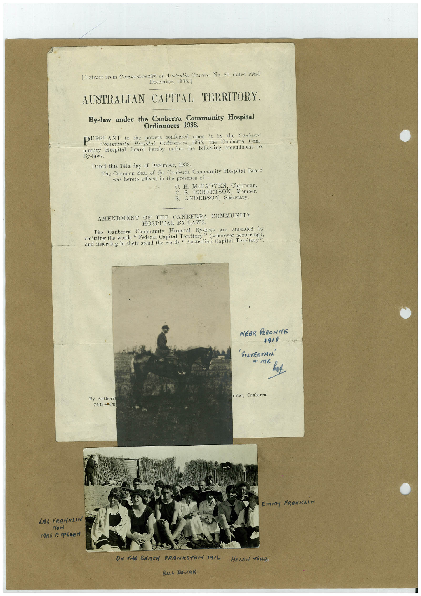

Book 1 · scan 080


Description
Transcription
Context
Review notes
Compare the machine draft with the scan. Handwriting and names need human review.
Artifacts
Edit the artifacts field in this note’s frontmatter to change these records. This summary is generated.
B01-S080-A01 — Letter, Photo & Handwritten note — Book 1, scan 080
Types: Typed document, Letter, Photo, Handwritten note
Scope: Whole scanned page; individual items can be split out during review.
Caption: Not mapped yet.
Caption source: Not recorded yet.
Caption status: unmapped
Machine transcription
[Extract from Commonwealth of Australia Gazette, No. 81, dated 22nd December, 1938] AUSTRALIAN CAPITAL TERRITORY. By-law under the Canberra Community Hospital Ordinances 1938. PURSUANT to the powers conferred upon it by the Canberra Community Hospital Ordinances 1938, the Canberra Com- munity Hospital Board hereby makes the following amendment to By-laws. Dated this 14th day of December, 1938. The Common Seal of the Canberra Community Hospital Board was hereto affixed in the presence of C. H McFADYEN, Chairman C. ROBERTSON, Member S. ANDERSON, Secretary. AMENDMENT OF THE CANBERRA COMMUNITY HOSPITAL BY-LAWS. Community Hospital By-laws are amended by omitting the words "Federai Capital Territory" (wherever occurine!? and inserting in their stead the words " Australian Capital Territory NEAR PERONTE 1918 'SOLVERTAN • тє inter, Canberra. By Authori 7462.PR Emmy FRANKLiN LAL FRANKLIN now ON THE SEACH FRANKSTON 1916 BILL REWAR